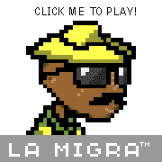

Garden del Rio Grande
This garden is about reclaiming spaces, telling our stories, and resisting digital colonialism.
In this part of the garden you will find a diptych, two videogames — Crosser and La Migra — that form a greater whole. The diptych deals with immigration and its responses across the US/Mexico border at El Paso and Ciudad Juarez
La Migra
La Migra places you, the player, inside a state of the art SUV patrolling the border during Operation Hold The Line. Click on the button on the right side of the screen to play La Migra.


Instructions
use W, D, or J, L, or arrow keys to move left or right, use W, I, or up-arrow to fling handcuffs at crossers